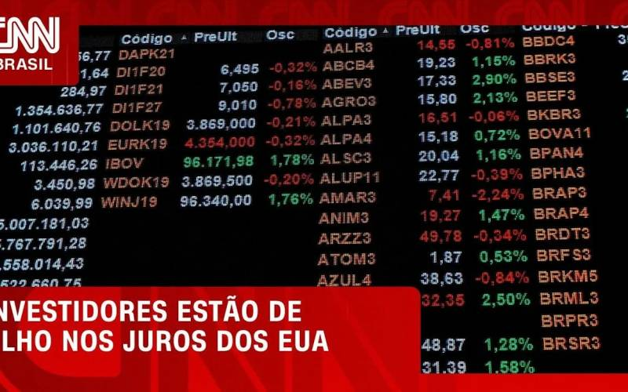

Crise no Paraguai: 1 milhão de clientes do Ueno Bank já foram ressarcidos
O presidente do Paraguai que assumiu depois da queda de Santiago Peña, Pedro Alliana, afirmou que mais de um milhão de clientes do Ueno Bank já tiveram os…
Notícias internacionais.
O presidente do Paraguai que assumiu depois da queda de Santiago Peña, Pedro Alliana, afirmou que mais de um milhão de clientes do Ueno Bank já tiveram os…
A vitória dos democratas nas eleições de meio de mandato nos Estados Unidos deve alterar significativamente a relação de forças em Washington e limitar a capacidade…
O mundo está acompanhando o processo eleitoral no Brasil. Alguns líderes mundiais se posicionaram após o 1° turno das eleições. O analista sênior de Internacional, Am…
O presidente dos Estados Unidos, Donald Trump, afirmou durante um comício republicano que chegou a considerar a possibilidade de renomear o Oceano Atlântico. Segundo o republicano, ele entrou…
A duas semanas das eleições de Meio de Mandato, o presidente Donald Trump, disse que, se os democratas vencerem a disputa pelo Congresso, os Estados Unidos vão queimar…
O PIB da China cresceu 4,5% no terceiro trimestre de 2026, mostrando aceleração da atividade econômica no período. O resultado coloca em destaque o desempenho da…
Os militares dos Estados Unidos desenvolveram novos planos de ataque que incluem a possibilidade de usar a chamada “mãe de todas as bombas” contra a infraestrutura energética e…
A Tesla apresentou a nova geração do Roadster, esportivo elétrico que promete acelerar de 0 a 100 km/h em menos de um segundo e realizar manobras no…
Novos documentos apresentados à FEC (Comissão Eleitoral Federal dos Estados Unidos) na quinta-feira (15) revelam a forte influência do bilionário da tecnologia Elon Musk nas Eleições…

O Ibovespa sobe nesta manhã de quinta-feira (3), de olho no cenário eleitoral aqui no Brasil. Pesquisas indicam um possível segundo turno entre o presidente Luiz In…